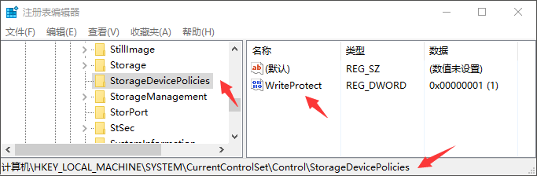

前言
在应用层禁用USB存储设备有两个方向：一个是完全的禁用USB存储设备，既不能读也不能写。
另一个是限制USB存储设备只能读不能写。
完全禁用
所有的USB存储设备都要挂接 usbstor.sys 驱动中，所以我们只要禁止这个驱动启动，就可以
禁止所有的USB存储设备，禁止的方法包括：直接把这个驱动改个名字，或者移动到别的文件夹，
还可以去注册表把 usbstor 服务的启动方式改为 禁用 等等。
在Win10系统中，某些USB存储设备会挂接到 uaspstor.sys 驱动中，也是同样的禁用方式。
以上方法是在USB存储设备 加载之前 进行拦截，我们还可以在 加载之后 再去阻止。比如：去掉
USB存储设备分区的盘符，主动弹出USB存储设备等。
那么如何知道USB存储设备已接入了呢，在有硬件设备加载后会触发 WM_DEVICECHANGE 消息，其wParam 参数为 DBT_DEVICEARRIVAL 时，表示设备接入，对应的 lParam 参数是描述设备信息的
结构体 DEV_BROADCAST_HDR，其成员 dbch_devicetype 描述的就是设备类型。
1 | typedef struct _DEV_BROADCAST_HDR { |
当 dbch_devicetype 类型为 DEV_BROADCAST_VOLUME 时，表示 DEV_BROADCAST_HDR 结构体实际上是DEV_BROADCAST_VOLUME 类型的结构体。
1 | typedef struct _DEV_BROADCAST_VOLUME { |
其中 dbcv_unitmask 参数，按位表示加载设备的 盘符，即bit[0]表示A盘符，bit[1]表示B盘符，以此类推。
删除分区的盘符使用 DeleteVolumeMountPoint 函数，参数例如 "C:\" 的形式。
1 | BOOL WINAPI DeleteVolumeMountPoint( |
1 | case WM_DEVICECHANGE: |
弹出USB存储设备使用 CM_Request_Device_Eject 函数，但是这个函数使用的是 设备实例 来进行弹出，
所以就需要查找到 盘符 对应的 设备实例，我们可以通过 STORAGE_DEVICE_NUMBER 数据进行匹配。
1 | CMAPI |
1 | typedef struct _STORAGE_DEVICE_NUMBER { |
如下为使用 盘符 查询 STORAGE_DEVICE_NUMBER 和枚举所有 GUID_DEVINTERFACE_DISK 设备查询的代码
1 |
1 | BOOL EjectUsbStorVolume(char Ch) |
1 | DEVINST GetDevInstByDevNum(STORAGE_DEVICE_NUMBER &stDevNum) |
限制只读
我们可以通过配置注册表的方式来使U盘只读，打开注册表以下路径
1 | HKEY_LOCAL_MACHINE\SYSTEM\CurrentControlSet\Control\StorageDevicePolicies |
如果未找到 StorageDevicePolicies 项，就手动创建该注册表项，然后在该项创建一个 DWORD 类型
的 WriteProtect 注册表值，配置这个值为 0 时，不限制只读，而配置成 1 时，U盘就变成只读的了。

注意：改策略不是实时生效的，在改完以后新接入的U盘才受控制。